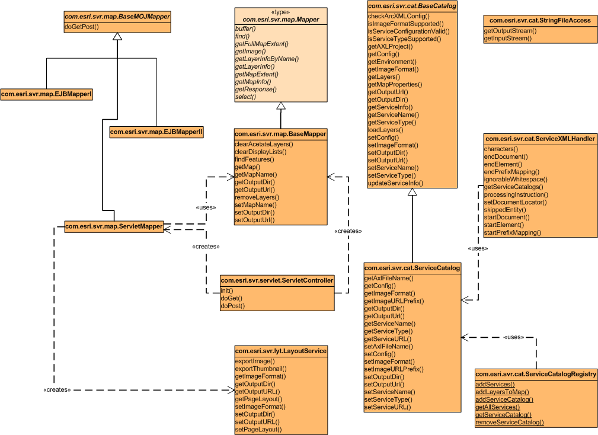

Provides base mapping classes. This package provides a set of base classes
for mapping in which BaseMapper could be used for developing classes for
both Web and EJB containers, while BaseMOJMapper and its subclasses are for
Web containers only.
Class Diagram of the Package Interfaces and Classes (left side)

Click the diagram to see a printer friendly version.